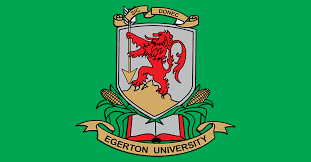

Welcome to the Department of Computer Science
|
Egerton University is the oldest institution of higher learning in Kenya, with a strong tradition of academic excellence and research. Located in Njoro, Nakuru County, the university has played a central role in training professionals and advancing knowledge in science, technology, agriculture, and the arts. The Department of Computer Science, under the Faculty of Science , equips students with modern skills in computing, software development, networking, artificial intelligence, and information technology. We aim to prepare graduates who can solve real-world problems using technology. |
 |
Our Vision
To be a leading center of excellence in Computer Science and ICT education in Kenya and beyond.
Our Mission
To provide quality education in computing and information technology, conduct innovative research, and produce graduates who can solve real-world problems.
Core Values
- Excellence
- Innovation
- Integrity
- Teamwork
- Professionalism
Explore our programs, facilities, staff, and research activities through the links above. We look forward to shaping the future of technology together.